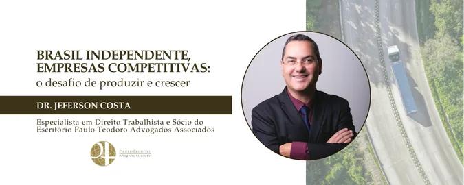

Brasil independente, empresas competitivas: o desafio de produzir e crescer
A independência de um país não se consolida apenas pela afirmação de sua autonomia. Ela se revela, ao longo do tempo, na capacidade de construir uma economia própria, fortalecer suas instituições e criar condições para que sua sociedade avance.
Ao olhar para o Brasil de hoje, essa reflexão ganha uma dimensão particularmente importante. Somos um país de grande capacidade produtiva, com uma economia diversificada e setores que desempenham papel fundamental no desenvolvimento nacional. Ao mesmo tempo, ainda enfrentamos o desafio de transformar esse potencial em crescimento sustentável e em maior competitividade para as empresas brasileiras.
Produzir e crescer em uma economia como a nossa exige capacidade de adaptação. O ambiente empresarial é dinâmico, os mercados se modificam, novas tecnologias alteram processos e modelos de negócio e decisões que antes podiam ser tomadas em horizontes mais longos hoje precisam considerar cenários cada vez mais complexos.
Acompanhamos de perto empresas de diferentes segmentos e, especialmente no Transporte Rodoviário de Cargas, percebemos diariamente como essa dinâmica se manifesta. O transporte não é apenas uma atividade econômica isolada. Ele está presente em praticamente todas as etapas da cadeia produtiva e, por isso, sente de maneira muito direta os movimentos da economia.
Quando a indústria produz mais, o transporte precisa responder a uma maior demanda. Quando o consumo muda, as rotas, os volumes e os modelos de distribuição também se alteram. Quando os custos da operação variam, toda a estrutura da atividade precisa ser reavaliada. E quando novas tecnologias modificam a forma de contratar, transportar, faturar ou administrar uma empresa, é necessário compreender essas mudanças e incorporá-las à realidade do negócio.
É justamente nessa dinâmica que está uma parte importante do desafio de competitividade das empresas brasileiras.
Crescer não significa apenas ampliar faturamento, estrutura ou participação de mercado. O crescimento precisa ser acompanhado de organização, capacidade de adaptação e decisões que preservem a sustentabilidade do negócio ao longo do tempo.
No Transporte Rodoviário de Cargas, essa preocupação é ainda mais evidente. Trata-se de um setor que opera em uma cadeia extremamente integrada, no qual decisões tomadas em uma ponta produzem efeitos em diversas outras. Uma alteração na forma de contratação, uma mudança na relação com fornecedores ou clientes, uma nova tecnologia incorporada à operação ou uma adequação necessária em determinado processo pode produzir consequências que vão muito além daquele ponto específico.
Por isso, quando acompanhamos uma empresa, nosso olhar não deve estar restrito ao problema que está diante de nós naquele momento. É necessário compreender a atividade, observar como as decisões se relacionam entre si e considerar os efeitos que determinada mudança poderá produzir no futuro.
Essa visão é importante porque a segurança de uma empresa não está apenas na capacidade de resolver as questões que surgem, mas também na possibilidade de se preparar para aquilo que ainda está por vir.
A experiência demonstra que empresas mais longevas são aquelas capazes de reconhecer mudanças, avaliar seus impactos e realizar os ajustes necessários sem perder de vista sua atividade principal, seus objetivos e a realidade do mercado em que estão inseridas.
Por esse motivo, o trabalho jurídico também precisa acompanhar essa realidade. Não se trata simplesmente de interpretar normas ou solucionar conflitos. Em muitas situações, é necessário participar da construção das decisões, compreender o funcionamento do negócio e avaliar como determinadas escolhas podem contribuir para sua continuidade e seu desenvolvimento.
Essa perspectiva é especialmente relevante em um momento em que a economia brasileira passa por transformações importantes. A capacidade de adaptação será cada vez mais determinante para que empresas possam preservar sua competitividade, aproveitar oportunidades e atravessar períodos de mudança sem comprometer aquilo que foi construído ao longo de sua trajetória.
Talvez essa seja uma das reflexões que o 7 de Setembro nos permite fazer: a independência também está relacionada à capacidade de construir o próprio caminho.
Para as empresas brasileiras, construir esse caminho significa produzir com eficiência, investir, inovar, gerar oportunidades e, sobretudo, desenvolver estruturas capazes de sustentar o crescimento ao longo do tempo.
Como advogado, e a partir da experiência de acompanhar empresas e empresários há mais de 30 anos, acredito que contribuir para esse processo exige compreender que cada decisão tomada hoje também participa da construção do negócio que existirá amanhã.
Um país economicamente forte depende de empresas capazes de crescer. E empresas capazes de crescer são aquelas que conseguem enxergar além das necessidades imediatas e construir, com responsabilidade, as condições para sua própria continuidade.


Paulo Teodoro – Advogados Associados